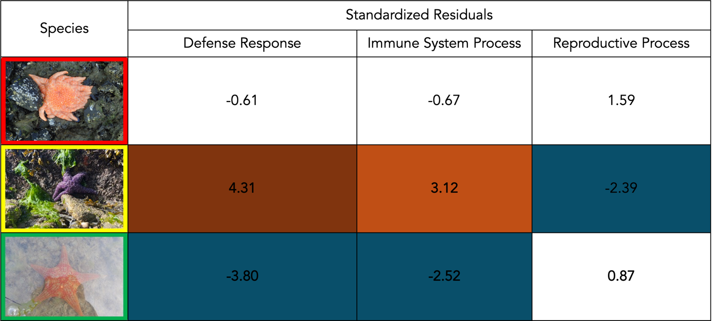

Immune Gene Abundance Does Not Explain Susceptibility to Sea Star Wasting Disease
A short non-peer-reviewed scientific report
This report is a Roberts Lab working manuscript. It has not been peer reviewed.
It is shared to make small scientific efforts, preliminary analyses, technical observations, and exploratory work openly available.
1 Abstract
Since 2013, over 20 species of Asteroidea along the Pacific Coast stretching from Alaska to Baja California, Mexico have experienced mass die-offs and population declines due to Sea Star Wasting Disease (SSWD). In Washington State, Pycnopodia helianthoides, Pisaster ochraceus, and Dermasterias imbricata have experienced extensive declines. P. helianthoides is the most susceptible to SSWD, P. ochraceus is considered moderately susceptible, while D. imbricata is less susceptible. It is unknown why there are differences in susceptibility to SSWD between the three species. Using genomic analysis, we compared the functional annotation profiles of P. helianthoides, P. ochraceus, and D. imbricata to determine differences in immune-related gene abundance. Our results showed significant differences in the functional annotation profiles between the three species, with immune system process, reproductive process, and defense response to other organisms showing the largest deviation from expected. In immune system process and defense response to other organism, P. ochraceus had higher counts of annotated genes than expected, whereas D. imbricata had lower counts than expected. Reproductive process also differed notably, with P. ochraceus showing fewer genes than expected in that category. These results suggest that functional annotation profiles are not evenly distributed across species and that the abundance of immune and defense related genes does not explain susceptibility to SSWD.
2 Background
Infectious diseases have caused widespread declines in commercially and ecologically important populations of echinoderms across the world, altering community structures and assemblages from the deep sea to the rocky intertidal. Unlike mammals, which have adaptive immune systems, echinoderms have an innate immune system (Smith 2012). The echinoderm immune system can recognize self from non-self and shows evidence of being able to hold short-term immunological memory (Karp and Hildemann 1976). Asteroidea, like all echinoderms, are reliant on their innate immune system to combat and neutralize pathogens. Sea star immune response is achieved through two pathways: cellular and humoral immunity (Tu et al. 2024). On a cellular level, echinoderms use specialized coelomocytes called phagocytes to perform phagocytosis, the process of recognizing and engulfing microbial pathogens and apoptotic cells (Rosales and Uribe-Querol 2017). The humoral immune response involves the release of molecules with antimicrobial activity and cytokines in the presence of foreign bodies that facilitates the cellular immune response such as phagocytosis (Chiaramonte and Russo 2015). The innate immune system of echinoderms is a critical function that allows them to identify and eliminate foreign pathogens.
Since 2013, over 20 species of Asteroidea along the Pacific Coast, from Alaska to Baja California, Mexico have experienced population declines and die-offs due to Sea Star Wasting Disease (SSWD) (Harvell et al. 2019; Hewson et al. 2014). SSWD is not a novel disease, having been historically observed since the 1970s; however, the outbreak in 2013 was unique in the number of species it affected, geographic range, and mortality (Konar et al. 2019; Menge et al. 2016). It has become one of the largest documented epizootic events for a noncommercial marine taxon ever recorded (Harvell et al. 2019; Hewson et al. 2014). The initial stages of the disease begin with dermal lesions that increase in depth and diameter as the disease progresses (Eisenlord et al. 2016). The stars also begin to experience changes in turgor, ray loss, and are often rendered into a pile of limbs and white ossicles in the final stages (Jaffe et al. 2019; Work et al. 2021). The visible effects of the disease result in sea stars being described as “melting.” The causative agent of SSWD has been found to be Vibrio pectenicida strain FHCF-3 (Prentice et al. 2025).
Focusing on three species co-occurring in Washington State, we compared their functional annotation profiles to understand the genomic driver of susceptibility. Within Washington State the dominant sea star species impacted by SSWD are D. imbricata, P. ochraceus, and P. helianthoides (Eisenlord et al. 2016). P. helianthoides is considered most susceptible to SSWD, and it has been almost functionally extirpated from its native range, with populations declining by 87% (Work et al. 2021). In the San Juan Islands in Washington, P. ochraceus populations have been observed to have declined to one fourth of their pre-outbreak population abundance (Eisenlord et al. 2016). The sharp increase in mortality of P. helianthoides and P. ochraceus have had ecosystem effects, impacting community assemblages around the rocky intertidal and beyond (Fuess et al. 2015). Once vibrant kelp beds become urchin barrens due to the lack of P. helianthoides predation, and community assemblages become dominated by mussels in the absence of P. ochraceus (Fuess et al. 2015).
The overall goal of this study was to compare the functional annotation profiles of P. helianthoides, P. ochraceus, and D. imbricata to understand why susceptibility to SSWD is different across species. Using GO-Slim annotations, we used a chi-squared goodness of fit to determine if there was a statistically significant difference in the functional annotation profiles among species and used a standardized residual analysis to determine which GO-Slim categories differed significantly.
3 Methods
3.1 Specimen Collection and Genomic Data
The genomes for P. helianthoides, P. ochraceus, and D. imbricata were provided by the Roberts Lab.
3.2 Data Processing
Functional annotation profiles for P. helianthoides, P. ochraceus, and D. imbricata were generated using the Gene Ontology (GO) framework. The GO project is a collaborative effort that provides descriptors of gene products and standardized classification for sequences (Gene Ontology Consortium 2004). Gene products are categorized into three non-overlapping domains of molecular biology: Molecular Function (MF), Biological Process (BP), and Cellular Component (CC) (Gene Ontology Consortium 2004). GO-Slim terms are simplified subsets of GO terms and are useful for comparison of GO term distributions.
Protein sequences for P. helianthoides, P. ochraceus, and D. imbricata were annotated using the Swiss-Prot best hits (E-value ≤ 1e-20) with UniProt GO term retrieval and GO-Slim mapping via GOATOOLS. Functional annotation profiles were generated using the Roberts Lab annotation workflow (https://github.com/sr320/workflow-annotation). Protein sequences from the three species were analyzed in RStudio using the provided workflow, which generated a local Swiss-Prot database. The Swiss-Prot database was created on March 2nd, 2026. Using BLASTP, the protein queries from each of the three sea star protein sequences were compared to the Swiss-Prot database (E-value ≤ 1e-20, best hit only). Then, using the UniProt REST API, the queries were annotated with protein names, organism, and GO terms (BP/MF/CC). The current GO ontology (Release 2026-01-23) was then downloaded and used to map the GO terms to high-level GO-Slim categories using GOATOOLS v1.5.2. This workflow process generated a summary file, raw data file, BLAST output, annotation file with full GO terms, and a primary results file for BLAST hits with UniProt annotations and GO-Slim terms. Full raw results and annotation analyses are published in the GitHub repository provided in the Data and code availability section.
Using the primary results files for each species, data frames of the GO-Slim categories were generated. Each species had between 135–137 GO-Slim categories. To compare the functional annotation profiles between species, 20 of these GO-Slim categories were selected, including anatomical structure development, antioxidant activity, carbohydrate metabolic process, cell differentiation, circulatory system process, cytokinesis, defense response to other organisms, detoxification, digestive system process, endocrine process, extracellular matrix organization, immune system process, inflammatory response, lipid binding, muscle system process, nervous system process, reproductive process, toxin activity, virus receptor activity, and wound healing. The selected GO-Slim categories were chosen based on their relevance to sea star immune processes and defense against SSWD. Of the 20 categories, 15 are classified as biological processes, four as molecular functions, and one as a cellular component.
3.3 Chi-Squared and Standardized Residuals Analysis
To compare the functional annotation profiles between P. helianthoides, P. ochraceus, and D. imbricata, a chi-squared goodness-of-fit test was performed comparing the selected GO-Slim categories. For the chi-squared test a p ≤ 0.05 was considered statistically significant. To identify GO-Slim categories that differed among the functional annotation profiles, standardized residuals from the chi-squared test were analyzed. Standardized residuals were examined to determine which GO-Slim categories had the greatest contributions to differences between observed and expected counts (Ahad et al. 2023). This analysis considered values outside of the |2| range as significant standardized residuals (Ahad et al. 2023). The standardized residuals were used to draw conclusions about susceptibility to SSWD for P. helianthoides, P. ochraceus, and D. imbricata.
4 Results
4.1 Annotation Summary
GO annotations for P. ochraceus, P. helianthoides, and D. imbricata were created through comparison with the Swiss-Prot database. BLASTP hits were retained for protein sequences with an E-value of ≤ 1e-20, and only the top hit for each protein sequence was included in subsequent analyses. Functional annotations were generated for 9,212 (47.9%) protein sequences in P. helianthoides, 12,697 (31.2%) in P. ochraceus, and 10,378 (50.3%) in D. imbricata.
4.2 Statistical Test Results
To compare the functional annotation profiles among P. ochraceus, P. helianthoides, and D. imbricata, a chi-squared goodness-of-fit test was performed with a significance level of p ≤ 0.05. Functional annotation profiles differed significantly among species (χ² = 64.16, df = 38, p = 0.005). Analysis of standardized residuals identified three GO-Slim categories that differed among species: immune system process, reproductive process, and defense response to other organisms (Table 1).
4.3 Immune System Results
Immune system protein counts significantly differed among species. As seen in Figure 1, P. ochraceus had higher-than-expected counts, while D. imbricata had lower-than-expected counts.
4.4 Defense Response
In addition to immune system process, protein counts annotated for defense response to other organisms differed among species. P. ochraceus had higher counts than expected while D. imbricata had lower counts than expected (Figure 1).
4.5 Reproductive Process
The number of proteins annotated for reproductive processes also differed significantly across species. Reproductive counts differed notably, with P. ochraceus showing fewer genes than expected in that category (standardized residual = |2.39|; Table 1).

5 Discussion
Here we report that the functional annotation profiles of P. ochraceus, P. helianthoides, and D. imbricata differed significantly among species. Three GO-Slim categories showed significant deviations from expected values: defense response to other organisms, immune system process, and reproductive process. For defense response to other organisms and immune system processes, P. ochraceus had higher counts than expected while D. imbricata had lower counts than expected. Additionally, P. ochraceus had fewer annotated genes than expected in the reproductive process category. P. helianthoides showed no unexpectedly high or low counts across the analyzed GO-Slim categories. Together, these results suggest that susceptibility to SSWD is not explained by the abundance of immune-related genes.
Of the three species analyzed, P. helianthoides is the most susceptible to SSWD and experienced the greatest population declines following the 2013–2014 outbreak (Casendino et al. 2023). P. helianthoides is now considered functionally extinct throughout much of its southern U.S. range and has experienced population losses exceeding 87% in northern refuges where populations persist (Prentice et al. 2025). If susceptibility to SSWD were primarily determined by the abundance of immune and defense related genes, we would expect P. helianthoides to possess the fewest annotated immune genes and D. imbricata, the least susceptible species, to possess the highest abundance. However, our findings do not support this hypothesis. Instead, these results indicate that regulation and expression of genes may be more important than the abundance of immune genes.
Previous studies indicate that sea stars rely on immune recognition pathways involving toll-like receptors (TLRs) and signaling cascades to recognize and activate an immune response (Fuess et al. 2015). TLRs belong to the family of pattern recognition receptors (PRRs), which play a critical role in pathogen recognition in the innate immune system (Sameer and Nissar 2021). In sea stars, TLRs have been suggested to play an important role in the immune response to SSWD as infected individuals differentially expressed TLRs relative to healthy sea stars (Fuess et al. 2015). During infection, these signaling pathways have been observed to be suppressed, preventing subsequent signaling from occurring and hindering immune response (Fuess et al. 2015). Our results suggest that differences in the regulation of immune signaling pathways may play a critical role in sea star susceptibility to SSWD.
The functional implications of immune gene abundance include the potential capacity for immune signaling cascades, phagocytosis, and encapsulation of foreign bodies (Smith et al. 2018; Montgomery et al. 2024). These processes are essential components of sea star immune function and are important for individuals to recognize and mount an immune response to SSWD. During SSWD progression, previous studies have documented loss of control over nervous system and cell adhesion functions (Fuess et al. 2015). It is unclear whether this loss is due to insufficient immune gene content, improper expression of immune genes, or viral suppression of immune signaling. Our finding that P. ochraceus has more immune-annotated genes than D. imbricata suggests a difference in potential immune capacity, but not necessarily in realized immune function during infection.
Our results also showed that P. ochraceus had fewer annotated reproductive genes than expected. This finding was unexpected. One possible explanation for the reduced abundance of reproductive gene annotations in P. ochraceus is a tradeoff between immune system processes and reproductive function. Energetic tradeoffs between reproduction and immune system function are well documented because both systems are energetically demanding (Gupta et al. 2022). However, evidence linking reproductive dynamics to SSWD is inconsistent. Following the 2013–2014 outbreak, several studies observed high recruitment in P. ochraceus juveniles at long-term monitoring sites in Washington and Oregon (Eisenlord et al. 2016; Menge et al. 2016). However, recruitment trends varied across locations, leading to the conclusion that recruitment and recovery are difficult to describe and predict (Miner et al. 2018). The reduced abundance of reproductive process annotations in P. ochraceus, combined with observed trends in recruitment, may indicate a trade-off between investment in immune defenses and reproductive processes, though this hypothesis requires further testing.
Overall, our results indicate that immune gene abundance does not explain susceptibility to SSWD and instead suggest that immune gene regulation and expression may play a more important role in determining susceptibility. Future studies comparing transcriptomes or proteomic profiles of infected and uninfected individuals could clarify how differences in immune gene expression and regulation affect susceptibility. Additionally, investigating potential tradeoffs between reproduction and immune function in sea stars may provide further insight into disease susceptibility and recovery dynamics. More broadly, these findings suggest that studies of disease susceptibility in marine organisms may benefit from focusing not only on gene abundance but also on the regulation and expression of immune pathways during infection.
6 Data and code availability
The functional annotation workflow is available at https://github.com/sr320/workflow-annotation. Full raw results and annotation analyses are available in the project GitHub repository.
7 Appendix A
| GO-Slim Category | Obs. P. helianthoides | Obs. P. ochraceus | Obs. D. imbricata | Resid. P. helianthoides | Resid. P. ochraceus | Resid. D. imbricata |
|---|---|---|---|---|---|---|
| Anatomical Structure Development | 1643 | 1832 | 1767 | 0.52 | -1.72 | 1.24 |
| Antioxidant Activity | 34 | 34 | 28 | 0.93 | -0.10 | -0.81 |
| Carbohydrate Metabolic Process | 231 | 282 | 265 | -0.84 | 0.19 | 0.63 |
| Cell Differentiation | 945 | 1103 | 981 | 0.18 | 0.62 | -0.81 |
| Circulatory System Process | 184 | 223 | 227 | -1.13 | -0.40 | 1.52 |
| Cytokinesis | 45 | 51 | 58 | -0.49 | -0.73 | 1.23 |
| Defense Response to Other Organism | 241 | 345 | 215 | -0.61 | 4.31* | -3.80* |
| Detoxification | 25 | 35 | 37 | -1.13 | 0.03 | 1.08 |
| Digestive System Process | 29 | 29 | 34 | 0.10 | -0.88 | 0.80 |
| Endocrine Process | 10 | 10 | 12 | 0.02 | -0.55 | 0.54 |
| Extracellular Matrix Organization | 133 | 160 | 120 | 0.51 | 1.21 | -1.73 |
| Immune System Process | 572 | 738 | 573 | -0.67 | 3.12* | -2.52* |
| Inflammatory Response | 114 | 133 | 145 | -0.85 | -0.83 | 1.69 |
| Lipid Binding | 371 | 432 | 42 | -0.59 | -0.47 | 1.06 |
| Muscle System Process | 73 | 93 | 91 | -0.93 | 0.09 | 0.82 |
| Nervous System Process | 498 | 524 | 505 | 1.37 | -1.36 | 0.04 |
| Reproductive Process | 667 | 686 | 693 | 1.59 | -2.39* | 0.87 |
| Toxin Activity | 13 | 19 | 9 | 0.09 | 1.39 | -1.51 |
| Virus Receptor Activity | 16 | 16 | 24 | -0.40 | -1.15 | 1.57 |
| Wound Healing | 60 | 83 | 72 | -1.00 | 0.83 | 0.15 |
8 Suggested citation
Nowers, H. 2026. Immune Gene Abundance Does Not Explain Susceptibility to Sea Star Wasting Disease. Current Findings. Available at: https://robertslab.github.io/current-findings/reports/sswd-immune-gene-abundance/
9 Version history
| Version | Date | Notes |
|---|---|---|
| 0.1 | 2026-06-17 | Migrated from nowers-capstone-paper.pdf (SAFS Capstone Research) |